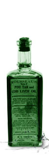

|

|
About the Online Archive of American Folk Medicine
For more than fifty years, folklorists associated with the University of California, Los Angeles have systematically documented beliefs and practices relating to folk medicine and alternative healthcare. In order to make the data more readily available to the worldwide community of researchers and medical practitioners, the Online Archive of American Folk Medicine was established in 1996 under the direction of Dr. Michael Owen Jones, a professor of folklore and history at UCLA.
History of the Archive
|